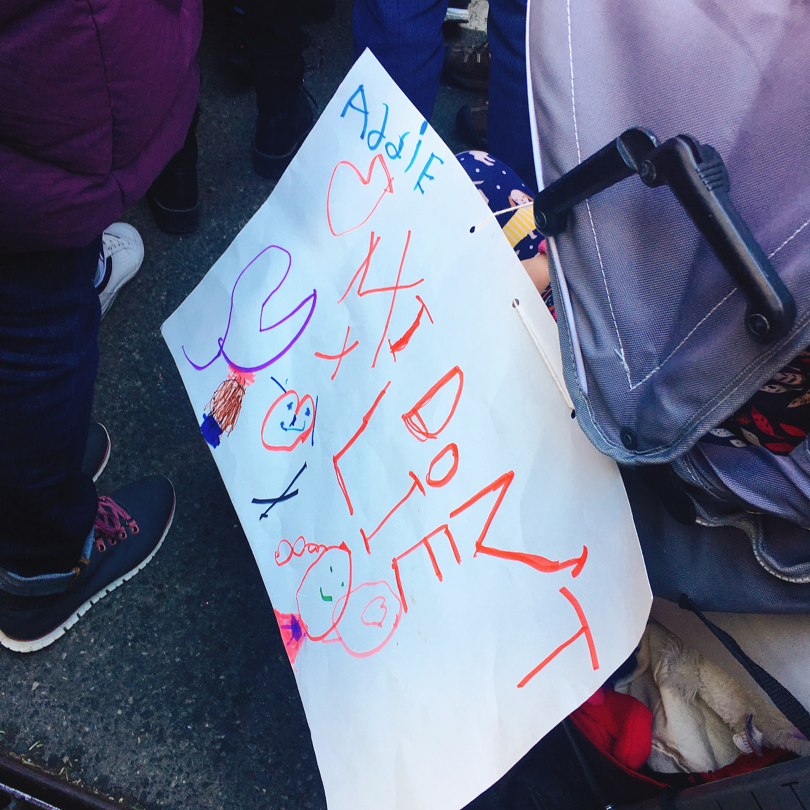
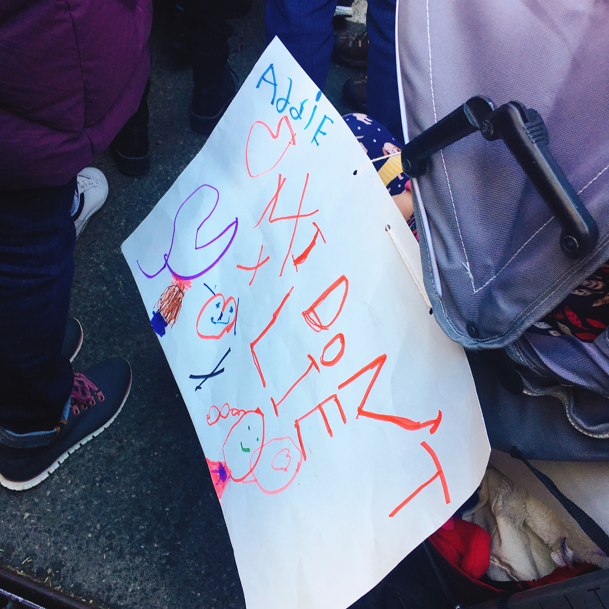
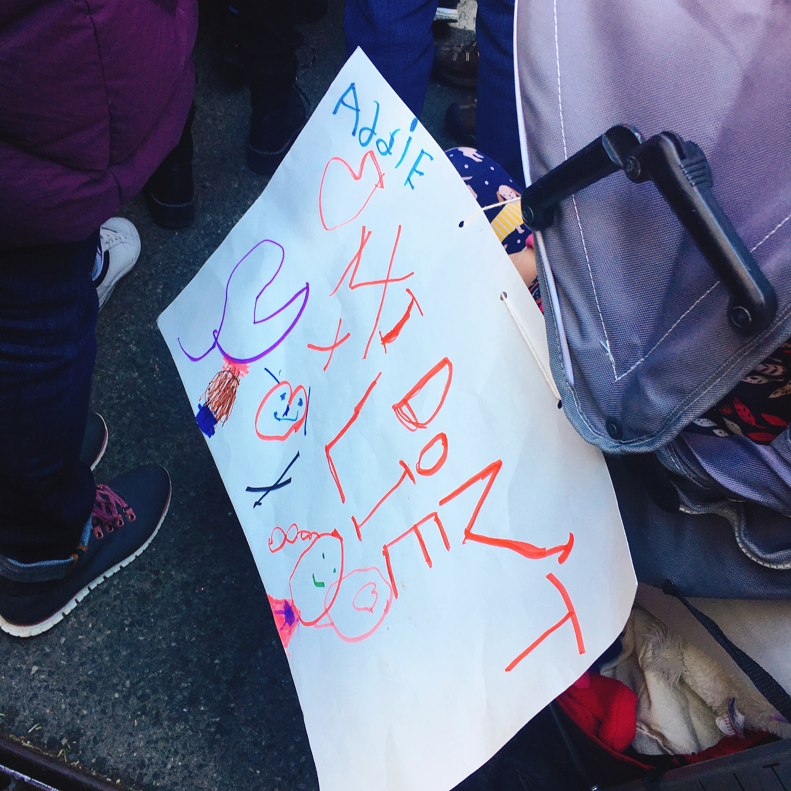

I'm a design researcher who is expected to graduate from Goldsmiths, University of London in Jan 2026 with Distinction. It was a rocky journey where I could grow and become resilience.
During the MA, I completed three interdisciplinary projects where art, design, science and engineering are entangled. These projects are based on my long-term commitment in finding answers and tangible solutions in the question below, which was inspired by the #MeToo movement I experienced in New York City, in 2017.

I have worked as multimedia artist and technical translator working at SBS, (Seoul Broadcasting System), Samsung, and conferences and symposiums such as TED, I'd like to share this inspiring TEDxNYC talk I transalted.
Ok, I'm a slow but steady runner who loves fartlek LSD, running outside seeing, smelling, touching, and listening to nature. I have finished 5k, 10k, and half(21.1k) marathon races, preparing myself for my very first full(42.2k) marathon coming in January 2026. Can wait to run enjoying the scenery of Ishigaki sea.
I'm also a free diver who can hold my breath for 2:45 sec underwater, and dive to 10 meter.
I've been always a bookworm till my childhood being a child even reading while walking, and libraries are my all time favorite place to go.